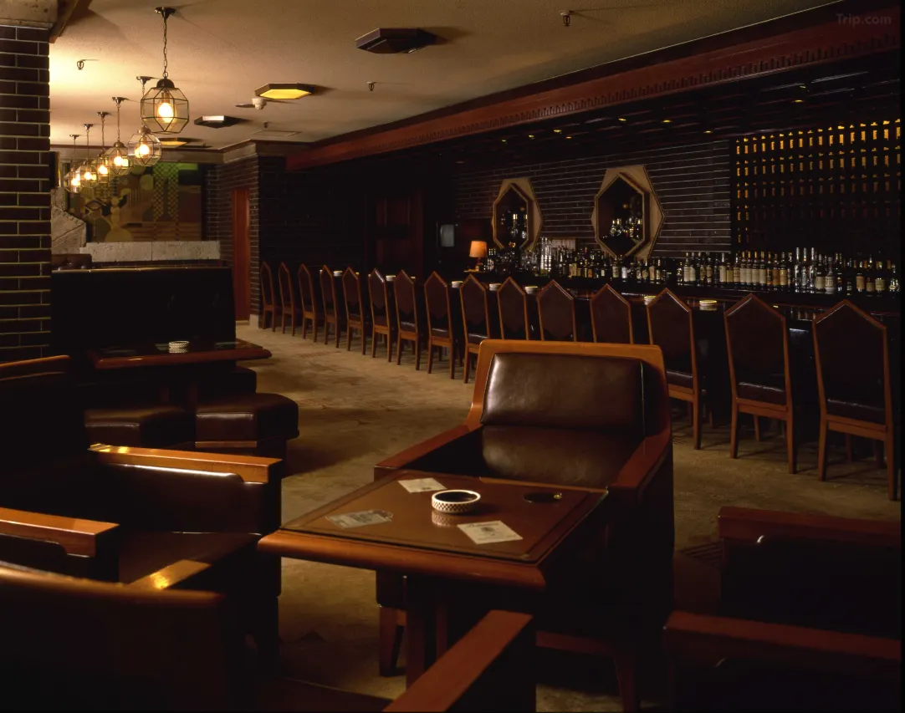
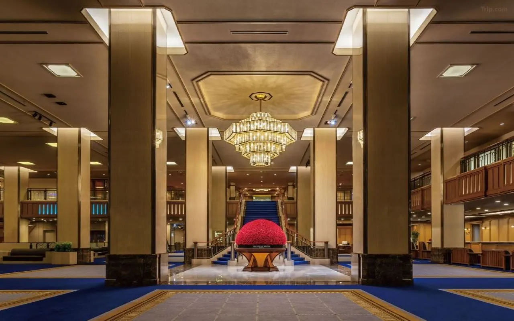
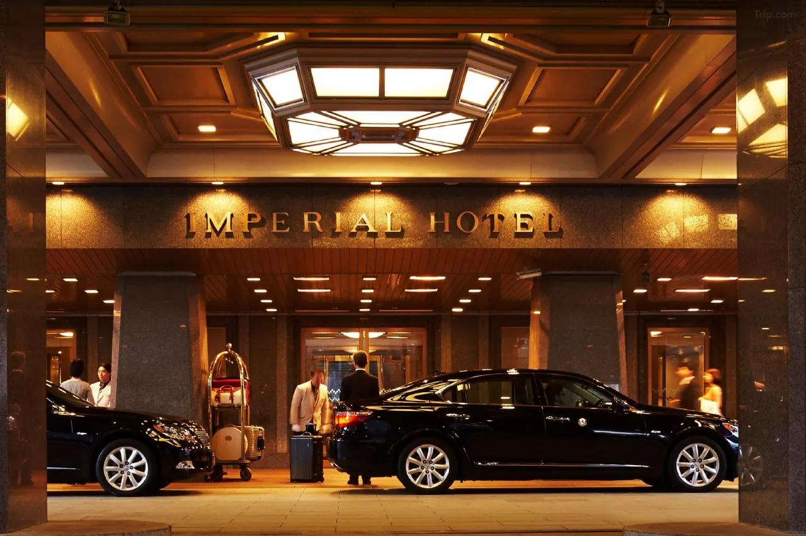
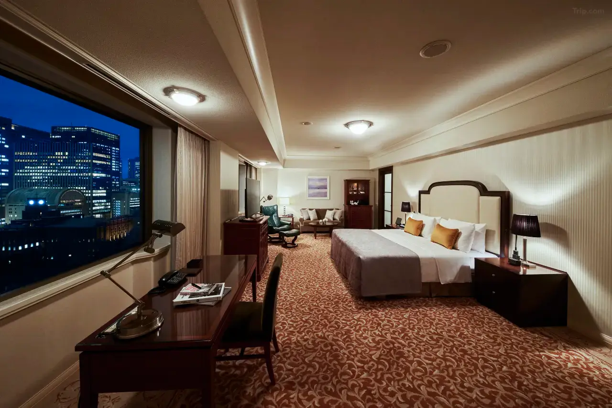
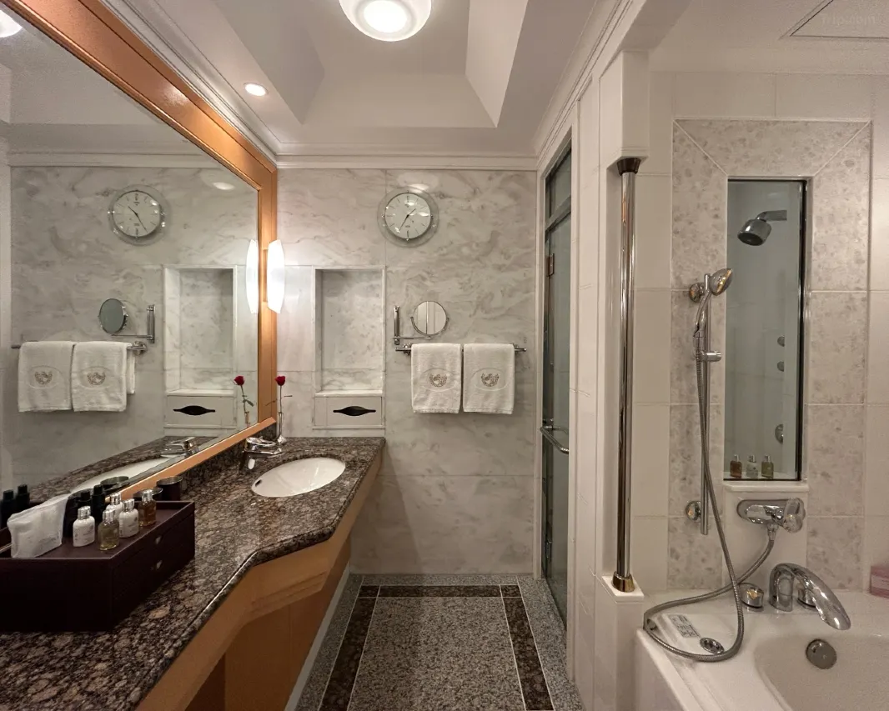
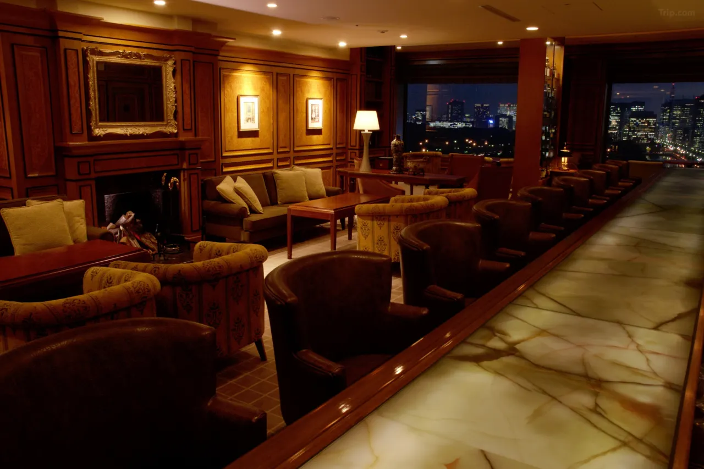
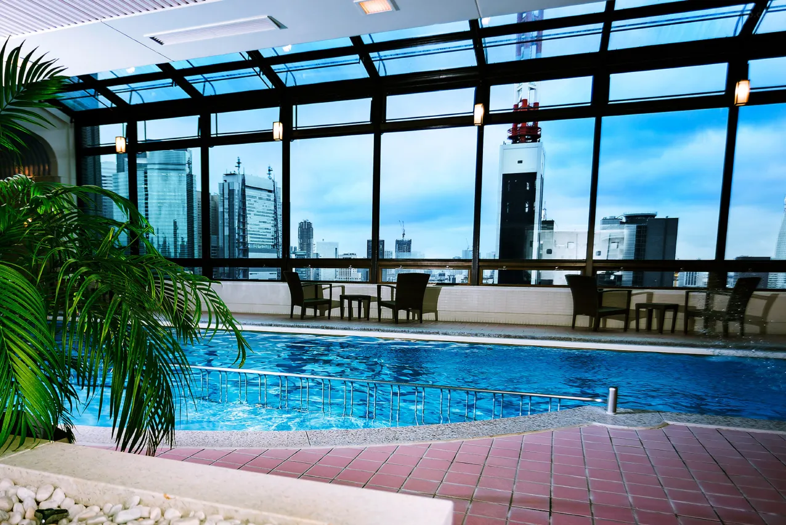
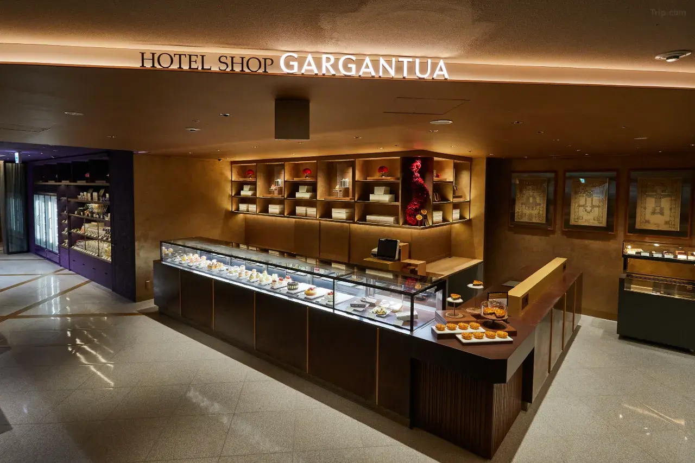

In episode 11 of Death Note, L does not meet Soichiro Yagami and the Kira task force in a police building. He does not meet them in a government facility, an anonymous conference room, or any space that belongs to the institutional world he refuses to fully inhabit. He meets them in a hotel. Specifically — and the anime is explicit about this — he meets them at the Imperial Hotel Tokyo. The building is named. The lobby and meeting suite arrangement are reproduced from the real address. The choice of location is part of L's character: he operates within the city's power structure without being of it, and the Imperial Hotel, sitting 200 meters from Hibiya Park and in view of the Diet Building, is precisely the space that mediates between institutional power and the world outside it.
That is the Death Note connection. What makes this pilgrimage stop different from every other location in the series is that when you book a room here, you are not staying near a filming location or adjacent to an architectural model. You are sleeping inside the building that the anime named as its own — one of the most historically significant hotels on earth, in continuous operation since 1890, across the full sweep of modern Japan's history.
Death Note, Episode 11: L's First Gathering
The scene in episode 11 is one of Death Note's most structurally important moments. L has remained a voice and a letter until this point — an intelligence without a face, communicating through Watari and a monitor. The decision to reveal himself to the task force is framed as a calculated risk: L exposes himself to identify whether any member of the investigation team might be Kira. The Imperial Hotel is the setting for this exposure, and the choice is not incidental.

Death Note's background art team drew real Tokyo with documentary precision throughout the series — the National Police Agency at Kasumigaseki, the Hibiya Park fountain, the University of Tokyo's Yasuda Auditorium, the Shibuya Scramble Crossing — and the Imperial Hotel receives the same treatment. The lobby's arrangement, the approach through the main entrance on Uchisaiwaicho, and the spatial relationship between the meeting suite and the hotel's public areas are all reproduced from the real building. This is not a visual analog or an architectural suggestion. The Imperial Hotel Tokyo appears in Death Note by name, making it one of the most explicitly documented anime pilgrimage sites in the city.
The hotel's public areas — the lobby, the ground-floor café, the arcade — are accessible to non-guests at all times. The Old Imperial Bar on the mezzanine level, a cavern of original Oya stone tiles salvaged from Frank Lloyd Wright's 1923 building, is open for drinks from the afternoon. For the pilgrim who wants to occupy L's space without committing to a luxury room rate, an afternoon tea at the Peacock café or an evening whisky at the Old Imperial Bar puts you inside the building that the anime used as its most explicit geographic acknowledgment. Staying the night, of course, is simply the most complete version of the same visit.
The Death Note Pilgrimage Route: The Imperial at Its Center
The Imperial Hotel's position within the full Death Note pilgrimage — nine confirmed locations across Tokyo and Yokohama, documented in our complete Death Note real locations guide — is structurally central. Location 01 in the pilgrimage, the National Police Agency headquarters at 2-1-2 Kasumigaseki where Soichiro Yagami's task force is based, is an eight-minute walk north. Location 02, the Hibiya Park fountain where Light writes Naomi Misora's name in episode 8, is the same distance east — and the park is literally visible from the hotel's upper floors. These three government-district sites cluster around the hotel with a walkability that makes it possible to cover the core of the Death Note pilgrimage in a single morning on foot.
For the remaining six locations — Shinjuku Station's West Exit underground concourse, the University of Tokyo's Hongo campus, the Shibuya Scramble Crossing, Odaiba's Fuji TV building, and ultimately the Daikoku Pier finale in Yokohama — every site is reachable from Hibiya Station in 30 to 45 minutes by subway. More importantly, the Imperial Hotel is the only location on that list where you can book a room and wake up inside the anime itself.
Three Imperials: A Hotel Reborn Twice
The first Imperial Hotel opened in November 1890, built at the request of Japan's aristocracy as the country opened itself to the West. It was Japan's first Western-style hotel — the first to serve steak, the first to operate a hotel laundry, the first to build a shopping arcade within a hotel property. It occupied this same site just south of the Imperial Palace grounds, facing what would become Hibiya Park, and it served as a formal extension of the palace itself: when the Emperor received state guests too numerous for palace accommodation, they stayed at the Imperial.

The second Imperial Hotel — the building that made the address legendary — was designed by Frank Lloyd Wright and opened on September 1, 1923. The date is significant: it was the same day as the Great Kantō Earthquake, a 7.9-magnitude disaster that leveled vast sections of Tokyo and killed over 100,000 people. Wright's building, engineered on a floating clay foundation and connected by seismic separation joints every 20 meters, sustained only light damage. The reflecting pool Wright had insisted on including — widely considered eccentric during construction — provided the water supply that helped prevent the post-earthquake firestorm from consuming the building. In the immediate aftermath, the hotel housed the American, British, French, and Italian embassies. Baron Okura's telegram to Wright in the United States read: "Hotel stands undamaged as a monument of your genius."
Wright's building, known as the "Jewel of the Orient," stood until 1968. The decision to demolish it was softened by preservation: the entrance lobby and a section of the original structure were rebuilt at the Meiji-mura open-air museum near Nagoya, where they can still be visited today. The current third-generation building opened in 1970 — the building L uses in episode 11, and the building you check into now.
The Old Imperial Bar: Wright's Ghost, Preserved in Whisky
The most important room in the hotel for the Death Note pilgrim — and for anyone with a sense of history — is the Old Imperial Bar on the mezzanine level. This space is built around the preserved fragments of Wright's 1923 building: Oya stone tiles, carved from the grey-green volcanic stone that Wright had shipped from the Izu Peninsula for the original structure, line one wall in panels of extraordinary tactile weight. The Art Deco geometry, the vintage lighting fixtures, and the specific density of a room that has absorbed the conversations of Tokyo's elite for a century all survive intact here.
The bar's menu runs deep into Japanese whisky — Yamazaki, Hakushu, Hibiki — served with sphere ice and the unhurried attentiveness that the hotel applies as a house standard. To sit here in the evening, with a glass of aged single malt and the building's history around you, knowing that L used these corridors as his operational base and that the founding architects of modern Japan negotiated in rooms 30 meters away, is to understand precisely why the Death Note writers chose this address over every other hotel in the city. It was the only hotel that carried enough history to be worthy of L.
The Rooms: Imperial Floors and the Frank Lloyd Wright Suite
The guest rooms at the Imperial occupy the main building across regular and Imperial floors, with the premier Imperial Floors on levels 14, 15, and 16 housing the most refined rooms and suites. Standard Superior rooms measure 32 square meters — designed with classic restraint that prioritizes material quality. Rooms come with flat-screen televisions, complimentary Wi-Fi, mini-bars, tea sets, morning newspapers, and the hotel's SleepWorks beds. The private bathrooms include bathrobes, premium toiletries, and the kind of physical generosity that reflects a hotel that has been calibrating its offering for well over a century.
The suites ascend through Junior, Corner, and full Suite categories up to the Presidential Suite at 150 square meters — and then to the Frank Lloyd Wright Suite, the only suite in the world permitted to bear Wright's name under a formal agreement with the Frank Lloyd Wright Foundation of the United States. Guests on the Imperial Floors receive a dedicated concierge, access to a private lounge, and complimentary use of the pool, saunas, and fitness gym.
Dining: Twelve Establishments, One Standard
The Imperial Hotel Tokyo operates twelve restaurants and bars, each with a distinct identity and a consistent quality floor. The anchor is Les Saisons, the Michelin-starred French restaurant on the main floor. The kaiseki tradition is handled by Tokyo Nadaman, with Michelin recognition extending also to Torakuro. The Imperial Viking Sal on the 17th floor carries a specific piece of culinary history: it was Japan's first hotel buffet, opened in 1958, and the Japanese word for buffet — baikingu, meaning Viking — entered the language directly from this restaurant's name. The Parkside Diner handles all-day dining, while the Rendez-Vous Lounge and its champagne bar counterpart, the Rendez-Vous AWA, serve the lobby level through the afternoon and evening.
Practical Information
- Check-in: 3:00 PM Check-out: 12:00 PM (noon)
- Anime Connection: Death Note, Episode 11 — named explicitly as L's first face-to-face meeting with the Kira task force · Location 08 in the full Death Note Tokyo pilgrimage
- Pilgrimage access: Hotel lobby and public areas open to non-guests at all hours · Old Imperial Bar open from afternoon · No reservation required for lobby visit
- Rooms: 1,005 rooms and suites · Imperial Floors: 14F, 15F, 16F
- Signature suite: Frank Lloyd Wright Suite — the only Wright-named suite in the world
- Dining: 12 restaurants and bars · Michelin-starred Les Saisons and Torakuro
- Facilities: Indoor pool · Sauna · Fitness gym · Shopping arcade · Tea ceremony room Toko-an · Limousine service
- Nearest stations: Hibiya Station (Hibiya/Chiyoda/Mita lines) — 1 min walk · Uchisaiwaicho Station (Toei Mita) — 3 min walk
- Death Note Location 01 (NPA, Kasumigaseki): 8 min walk north
- Death Note Location 02 (Hibiya Park fountain): 8 min walk east
- Airport access: Direct limousine bus to/from Narita and Haneda airports
Getting There: The Geographic Center of Institutional Tokyo
Hibiya Station — served by the Tokyo Metro Hibiya, Chiyoda, and Toei Mita Lines — sits one minute's walk from the hotel entrance, making it one of the best-connected addresses in the city. Uchisaiwaicho Station on the Toei Mita Line is three minutes away. From Shibuya, the Ginza Line runs direct to Hibiya in 22 minutes. From Tokyo Station, the hotel is a 15-minute walk or a single subway stop. Airport limousine buses depart from the hotel's main entrance for both Narita and Haneda airports, with journey times of approximately 60 and 40 minutes respectively.
For the Death Note pilgrim working through the full nine-location itinerary, the hotel's position relative to the government-district cluster makes it the natural organizing point for the pilgrimage's central chapter. The NPA building and Hibiya Park are both reachable on foot; every other Tokyo location is under 30 minutes by subway from Hibiya Station. The pilgrimage logistics, in short, work exactly as well from the Imperial Hotel as L's choice of it for episode 11 implies they should.
The Imperial Beyond Death Note
The Death Note connection is real and documented — but the Imperial Hotel Tokyo is one of those buildings that requires no single anime to justify a visit. It is one of three hotels known as the gosanke — the grand houses of Tokyo, a designation borrowed from the three great branch houses of the Tokugawa clan — alongside the Hotel Okura and the Hotel New Otani. It has been at the center of modern Japan's history with a consistency that no other address matches: Joe DiMaggio and Marilyn Monroe's 1954 honeymoon stay, MacArthur's occupation headquarters, the site of Japan's first hotel wedding and first hotel buffet, the building that sheltered foreign embassies when the Kantō earthquake destroyed the city around it.
The list of world leaders, artists, and cultural figures who have passed through its lobby since 1890 is not a list — it is a parallel history of the twentieth century, viewed from a single address in Chiyoda. And now, among those distinctions, it can also claim: the hotel that L chose, by name, in episode 11 of Death Note, as the place where he finally showed his face to the people trying to catch Kira. It is perhaps the most L-appropriate building in Tokyo. Anyone who has watched the series will understand why.
| Location | 1-1-1 Uchisaiwaicho, Chiyoda, Tokyo 100-8558 |
| Category | Grand Luxury Hotel — one of Tokyo's three gosanke great hotels |
| Anime Connection | Death Note, Episode 11 — named explicitly as L's meeting location with the Kira task force · Location 08 of 9 in the Death Note Tokyo pilgrimage |
| Founded | 1890 — current building opened 1970 |
| Historical Significance | Survived the 1923 Great Kantō Earthquake · Frank Lloyd Wright's greatest Japanese commission · Japan's first hotel buffet, wedding, shopping arcade |
| Price Range | ¥50,000–¥120,000+ per room per night · Suites from ¥200,000 |
| Standout Experiences | Frank Lloyd Wright Suite · Old Imperial Bar (1923 Oya stone tiles) · Les Saisons (Michelin 1★) |
| Rooms | 1,005 rooms and suites · Imperial Floors: 14F–16F |
| Nearest Stations | Hibiya Station — 1 min walk · Uchisaiwaicho Station — 3 min walk |
| Airport Access | Direct limousine bus — Narita & Haneda |
Photo Gallery

Photo 1
Photo 2
Photo 3'">
Photo 4'">
Photo 5'">
Photo 6'">Stay Where L Chose to Meet the Task Force
Check availability and book your stay at Imperial Hotel Tokyo through our trusted partners.
Check Availability & Book →